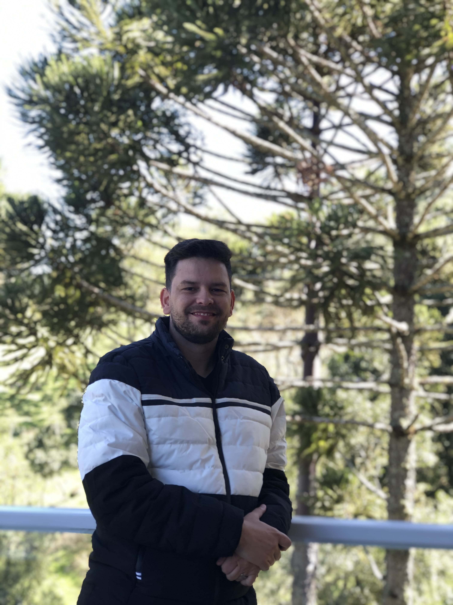

Introduction > Me
Know a little bit about me
About me
Victor, pharmacist and Nursing Technician with experience in maritime search and rescue. Passionate about technology, I am currently studying Systems Analysis and Development and seeking opportunities to apply my knowledge in IT and healthcare.

Victor Suevo
With a passion for technology and dedication to studying IT, I am determined to reach new heights at the intersection of IT and healthcare, contributing to a more innovative and healthy future.
Skills
| MRCC | Management of maritime rescue operations |
| IT | Creation using HTML and CSS |
| Programming in Python and JavaScript | |
| Administrator | Administrative work in financial execution (bidding and contracts) |
Completed Projects
Created a scheduling control system for a pediatric clinic
The scheduling control system developed in collaboration with the Burtolini Pediatric Clinic includes several essential features designed to streamline appointment management and enhance patient care. The code, written in Python with SQLite as the database, is structured to address the clinic's specific needs effectively.
- Appointment Scheduling: Precise scheduling preventing overlapping slots. Supports emergency bookings.
- Patient Registration: Registers new patients while avoiding data duplication.
- Edit and Cancel: Users can edit, cancel, or reschedule directly.
- Time Interval: Enforces a 30-minute gap between non-emergency appointments.
- Report Generation: Generates CSV reports for financial tracking.
Implementation Details:
Uses SQLite for data storage, Tkinter for GUI. Built to be adaptable for future enhancements.
My Future Ambitions
My professional goal is to specialize in the field of Information Technology (IT) and contribute significantly to large projects. I have a deep interest in understanding and mastering the multiple facets of IT, from software development to cybersecurity, including network administration and data management.
I believe that specialization is fundamental to achieving excellence, and therefore, I intend to invest continuously in my education and training. My objective is to obtain recognized certifications and stay updated with the latest technological trends and innovations. I want to be a professional who not only understands technology but also knows how to apply it efficiently to solve complex problems and create innovative solutions.
English version
French version